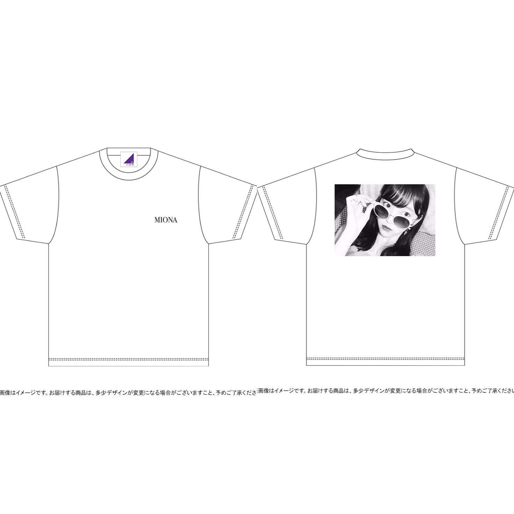
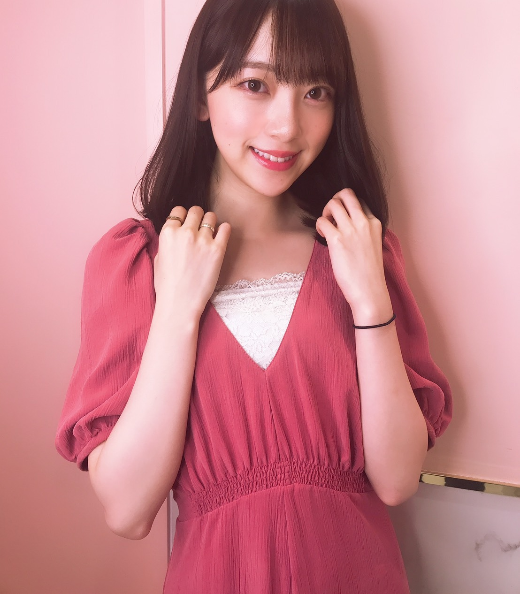
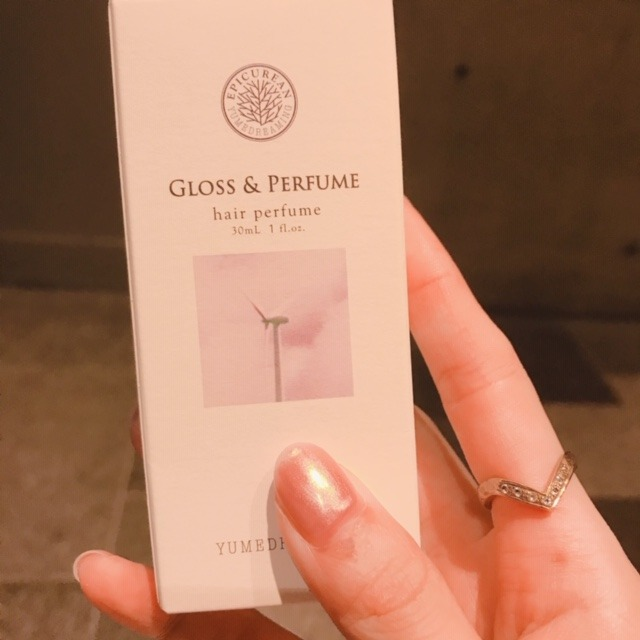
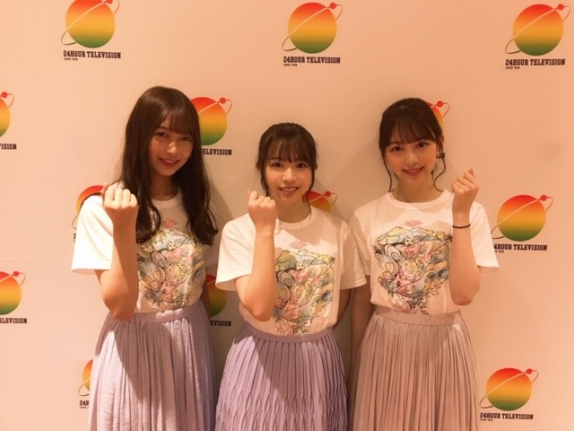

2019/0826Mon生誕Tの季節ですね
街を歩いているときめちゃめちゃに
すきな香りの方が通り過ぎて
でもどなたかわからなくてキョロキョロ
探しちゃいました、、、
いい匂いすぎた、、、香水聞きたかったな、、、
聞けないけど、、、
改めて匂いフェチだなあ~

2019年の生誕Tができました
カジュアルシンプルだけど、洗練されたトレンド感も出したくて
表は、MIONAのロゴをさりげなく
裏は、まだ世に出したことのないプライベート写真の堀にしてみました！
どうかな~❤︎？
去年の夏、蘭世と遊びに行ったときの一枚です☺︎
今年の夏はまだ蘭世と遊びに行けてないや
行きたい~
生誕Tもあと何枚デザインできるのかなぁ、
とかそんなことも考えながら男女ともに
私服でも着やすいようにしました
今しか予約できないので、ぜひぜひ♫
これ着て握手会やライブやイベントに
来てくださってもすごく嬉しいし
夏だと、男性はデニムに白スニーカーを
女の子はデニムショーパンにインしたり
秋冬はこの上に黒のおっきめジャケットとか
コートなんかを羽織っても
モノトーンでオシャレかなぁと♡、
私、男女問わずモノトーンコーデの方がすきで、
全身黒、全身白、黒と白、みたいな
シンプルで洗練された感じに惹かれます
私も握手会やレコメン！なんかで着ます！
おそろいしましょ~(^-^)

髪色をちょっと早めの、秋仕様にしました~
わ~い
『モンブランベージュ』です♡
今年の秋は、茶色をたくさん取り入れたくて
まずは髪色から！笑
洋服もブラウンやベージュのものを集めなきゃ。
秋服も楽しみだなあ

コスメキッチン大好き人間なのですが
最近、新しい香水を買いました◎
オーガニックでちょい大人な香りが堪りません...♡

24時間TVもありがとうございました~

プリンプリン
では
2019/08/26 18:54
コメント(226)
こんばんは！
いつもブログ更新ありがとうです！
生誕Tシャツとても良い感じです
予約します✨
昨日の24時間テレビ観れなかったです(涙)
観たかった〰️。
アクセサリーも似合ってて可愛いですよ
体調に気を付けてこれからも頑張ってね
応援してます ✨
いつもブログ更新ありがとうです！
生誕Tシャツとても良い感じです
予約します✨
昨日の24時間テレビ観れなかったです(涙)
観たかった〰️。
アクセサリーも似合ってて可愛いですよ
体調に気を付けてこれからも頑張ってね
応援してます ✨
ブログ更新ありがとう！
モノトーン良いね✨
あまり無理せずにね
がんばろ〜٩(๑❛ᴗ❛๑)۶
モノトーン良いね✨
あまり無理せずにね
がんばろ〜٩(๑❛ᴗ❛๑)۶
ブログ更新ありがとう。
生誕T買ったよ。
生誕T買ったよ。
こんばんはみおにゃ♪ヽ(´▽｀)/体調如何でしょうか⁉️(゜ロ゜)
更新有難う！
御疲れ様でした！
生誕T良いと思います、
じゃ買います。
何時も頑張って下さい、
常に必ずしても応援しています。
どうか御身体に気を付けて下さい！
ずっと大好き！

御疲れ様でした！
生誕T良いと思います、
じゃ買います。
何時も頑張って下さい、
常に必ずしても応援しています。
どうか御身体に気を付けて下さい！
ずっと大好き！
お疲れ様です！
私も未央奈と同じ香水買ってみようかなあ
体調に気をつけて、無理しないでね！
私も未央奈と同じ香水買ってみようかなあ
体調に気をつけて、無理しないでね！
未央奈！
生誕T、もちろん買ったよ！
今年は生誕Tとフェイスタオルを買いました。
届くのが楽しみです！
次、会いに行けるのは10月20日で、まだ先だけど、その時には生誕Tを来て行きたいと思います！
髪色も超いいね！
24時間テレビも、たまたまリアルタイムで見られました！
喉、安静にしてね。
生誕T、もちろん買ったよ！
今年は生誕Tとフェイスタオルを買いました。
届くのが楽しみです！
次、会いに行けるのは10月20日で、まだ先だけど、その時には生誕Tを来て行きたいと思います！
髪色も超いいね！
24時間テレビも、たまたまリアルタイムで見られました！
喉、安静にしてね。
今年も素敵なデザインですね～。是非是非！！
かわいい➰
毎年生誕Tシャツ買って握手会行ってます
お身体に気をつけて頑張ってください
毎年生誕Tシャツ買って握手会行ってます
お身体に気をつけて頑張ってください
ブログありがとう〜！
生誕Tもちろん買ったよ〜！握手会の時来ていくね！
できるだけ長くいて欲しいなぁ〜
24時間TV見たよ！めっちゃ可愛いかった！
生誕Tもちろん買ったよ〜！握手会の時来ていくね！
できるだけ長くいて欲しいなぁ〜
24時間TV見たよ！めっちゃ可愛いかった！
未央奈さん、こんばんは
香水は奥が深いですね
匂いのちからは大きいなぁ
オシャレなTシャツが
出来上がりましたね(^_^)
歩きながら前から見た時に
MIONAのロゴで
んっ？
通り過ぎて後ろを振り返って
写真を見た時に
お～なるほど！
一枚で二度おいしいTシャツ
最高です！！
コーデも参考になりました
髪色が明る過ぎず
落ち着いた感じで素敵です
もちろん似合ってます(^_^)/
24時間TVお疲れさまでした
香水は奥が深いですね
匂いのちからは大きいなぁ
オシャレなTシャツが
出来上がりましたね(^_^)
歩きながら前から見た時に
MIONAのロゴで
んっ？
通り過ぎて後ろを振り返って
写真を見た時に
お～なるほど！
一枚で二度おいしいTシャツ
最高です！！
コーデも参考になりました
髪色が明る過ぎず
落ち着いた感じで素敵です
もちろん似合ってます(^_^)/
24時間TVお疲れさまでした
生誕Tシャツ、予約しましたよー。楽しみ！
握手会に着ていきますね♡
握手会に着ていきますね♡
指輪は色んな所に好きなだけ
つけて下さいね⁉︎
モノトーンな服装が好きな
匂いフェチの堀未央奈さん
ブログ更新ありがとう⁉︎
生誕Tシャツいい感じだね⁉︎
欲しいなぁ〜〜
つけて下さいね⁉︎
モノトーンな服装が好きな
匂いフェチの堀未央奈さん
ブログ更新ありがとう⁉︎
生誕Tシャツいい感じだね⁉︎
欲しいなぁ〜〜
季節に合わせて髪の色変えるなんて素敵ですね!!
季節を楽しんでいて良いな~
季節を楽しんでいて良いな~
更新ありがとう。
Tシャツシンプルでいいですね。
未央奈ちゃんの好みの匂いになりたいよ～
秋服似合ってて可愛い
体調気をつけてね。
無理しないでね。
Tシャツシンプルでいいですね。
未央奈ちゃんの好みの匂いになりたいよ～
秋服似合ってて可愛い
体調気をつけてね。
無理しないでね。
ブログ更新ありがとう！！
生誕T買うの忘れました！すいません！
生誕T買うの忘れました！すいません！
去年の生誕Tめっちゃ使ってます笑
24時間テレビサイコーだった！
24時間テレビサイコーだった！
大好き！！
未央奈ちゃん、こんばんは。体調いかがですか？
なんてこった…今ブログ見てたらTシャツのこと知ったよ。欲しかったけど、時間過ぎてしまった。
今日もお疲れ様でした！ もうすぐ神宮。
頑張ってね！！
なんてこった…今ブログ見てたらTシャツのこと知ったよ。欲しかったけど、時間過ぎてしまった。
今日もお疲れ様でした！ もうすぐ神宮。
頑張ってね！！
めっちゃ欲しいけどお金が。みおなの生写真でいっぱい使っちゃった笑
Tシャツかわいー
みおなちゃんもかわいー!
相変わらずおしゃれですね♡
ずっと大好きです
みおなちゃんもかわいー!
相変わらずおしゃれですね♡
ずっと大好きです
未央奈ちゃんブログ更新ありがとう！
24時間テレビ見たよー
singout素晴らしいパフォーマンスだったよー
神宮球場でのライブ頑張ってください！
ライブには行けないけど、ライブビューイングで見るよー
桜井キャプテンが最後なので、思いっきり楽しんでください！
24時間テレビ見たよー
singout素晴らしいパフォーマンスだったよー
神宮球場でのライブ頑張ってください！
ライブには行けないけど、ライブビューイングで見るよー
桜井キャプテンが最後なので、思いっきり楽しんでください！
未央奈さん、こんばんは。
秋が近づいていますね。
お洒落、いっぱい楽しんでね。
おそろい、したいです。
秋が近づいていますね。
お洒落、いっぱい楽しんでね。
おそろい、したいです。
生誕Tオーダーしよう。しかし、何か格好いいし、センスがあるなぁ。体調は、よくなったかな？さぁ、明治神宮だぞぉ。今年の夏の締めくくりだぁ。全力でいくぞ。
暑いですね、ワ～体調崩しませんように、神宮頑張って下さいね
白黒のモノトーンとは違うかもしれないけど、女性のファッションで、乃木坂46のライブでけっこう見かけたんですけど、恐らくSing Out！をイメージしたと思われる、白いシャツに紫のロングスカートのファッション、好きですね
普通に街中でもそうゆう感じのファッションを見かけると、もしかして乃木坂46のファンなのかな、あるいは乃木坂46を参考にしているのかなとか勝手に思ったりしてます(笑)
堀さんのお誕生日もありますし、素敵な秋になるといいですね
普通に街中でもそうゆう感じのファッションを見かけると、もしかして乃木坂46のファンなのかな、あるいは乃木坂46を参考にしているのかなとか勝手に思ったりしてます(笑)
堀さんのお誕生日もありますし、素敵な秋になるといいですね
生誕T買った
楽しみです
握手会とライブ着ます
楽しみです
握手会とライブ着ます
みおな
今日もお疲れ様です
生誕Tシャツばっちり予約しました（さっき締切だったからセーフ）
みおなのTシャツは、シンプルなデザインだから日常生活でも実用性があるので便利です
11月の個別握手会には届いているので、そこで着て行こうかと思います
俺も、後何回みおなのTシャツ買えるのかと思いながら予約しました
ちなみに今週の神宮ライブは、去年の生誕Tシャツで参加しようと考えてます
新しい茶髪可愛いです
ライブでは、どんなみおなが見られるのか楽しみです
オーガニックって聞くと、話逸れるけど最近は、あなたの番ですの尾野さんしか思い浮かばないです笑
普通にしてれば可愛いのに、かなりやばい人です（今日はどんな攻撃をするのかも注目してます）
だけど、犯人ではない気がするんだよね
個人的には、序盤から怪しいのは黒島ちゃんだと思うけど、どーやんとキスもしていい感じだから、やめて欲しいな笑（普通に恋の応援してます笑）
みおなは、どう思うのかな？
毎日更新してくれてありがとう
今月は、誰よりも更新してくれてると思います
体調には気をつけて、過ごして下さい（ライブリハとか無理しすぎないように）
ありがとうございました
今日もお疲れ様です
生誕Tシャツばっちり予約しました（さっき締切だったからセーフ）
みおなのTシャツは、シンプルなデザインだから日常生活でも実用性があるので便利です
11月の個別握手会には届いているので、そこで着て行こうかと思います
俺も、後何回みおなのTシャツ買えるのかと思いながら予約しました
ちなみに今週の神宮ライブは、去年の生誕Tシャツで参加しようと考えてます
新しい茶髪可愛いです
ライブでは、どんなみおなが見られるのか楽しみです
オーガニックって聞くと、話逸れるけど最近は、あなたの番ですの尾野さんしか思い浮かばないです笑
普通にしてれば可愛いのに、かなりやばい人です（今日はどんな攻撃をするのかも注目してます）
だけど、犯人ではない気がするんだよね
個人的には、序盤から怪しいのは黒島ちゃんだと思うけど、どーやんとキスもしていい感じだから、やめて欲しいな笑（普通に恋の応援してます笑）
みおなは、どう思うのかな？
毎日更新してくれてありがとう
今月は、誰よりも更新してくれてると思います
体調には気をつけて、過ごして下さい（ライブリハとか無理しすぎないように）
ありがとうございました
堀ちゃんこんばんは！
生誕Tシンプルでいいですね〜、着やすそう！
危うく買いそびれるところでした、教えてくれてありがとうございます(o^^o)♩
個人的な好みでシンプルなシャツが好きでよく着るので嬉しいです！( ´ ▽ ` )
おそろいしましょう！！笑
そして秋仕様の堀ちゃんもめっちゃ可愛いですー！
髪色も素敵ですしシンプルに下ろしてる髪型も可愛い、お洋服も秋らしいシックな雰囲気で凄くお似合いです(o^^o)
そして何より堀ちゃんが可愛い！！なんだか儚い…！
秋の堀ちゃんもこんなに可愛いんですね〜、秋が楽しみになってきました( ´ ▽ ` )♩
モバメで送ってくれた内容、ありがとうございます(^^)
勝手な言葉をかけられた人に対して「気にしないで」と簡単には言いたくないです、自分に対して言われたことを何の気にもしないって中々無茶な話ですし。
大好きな堀ちゃんが嫌な思い、ツラい思いをするのが僕は本当に嫌です！
だから、堀ちゃんがそんな言葉が気にならなくなるぐらい全力で肯定し続けますね(o^^o)
堀ちゃんに対して思ってる好きなところ、素敵なところを、思ってるだけじゃなくて全部表していきます！
まあ堀ちゃんに対しては無意識のうちに肯定の気持ちしか出てこないので、宣言する必要もないんですが( ´ ▽ ` )笑
さてさて、夜はもう結構涼しいですね〜、夏の終わりを感じてちょっと寂しい( ´ ー ` )
神宮ライブ楽しみだなぁ、参加するのは3日目だけですが、3日間とも絶対晴れさせます！晴れ男なので！笑
では、最後まで楽しい夏を過ごしましょうー！(o^^o)
生誕Tシンプルでいいですね〜、着やすそう！
危うく買いそびれるところでした、教えてくれてありがとうございます(o^^o)♩
個人的な好みでシンプルなシャツが好きでよく着るので嬉しいです！( ´ ▽ ` )
おそろいしましょう！！笑
そして秋仕様の堀ちゃんもめっちゃ可愛いですー！
髪色も素敵ですしシンプルに下ろしてる髪型も可愛い、お洋服も秋らしいシックな雰囲気で凄くお似合いです(o^^o)
そして何より堀ちゃんが可愛い！！なんだか儚い…！
秋の堀ちゃんもこんなに可愛いんですね〜、秋が楽しみになってきました( ´ ▽ ` )♩
モバメで送ってくれた内容、ありがとうございます(^^)
勝手な言葉をかけられた人に対して「気にしないで」と簡単には言いたくないです、自分に対して言われたことを何の気にもしないって中々無茶な話ですし。
大好きな堀ちゃんが嫌な思い、ツラい思いをするのが僕は本当に嫌です！
だから、堀ちゃんがそんな言葉が気にならなくなるぐらい全力で肯定し続けますね(o^^o)
堀ちゃんに対して思ってる好きなところ、素敵なところを、思ってるだけじゃなくて全部表していきます！
まあ堀ちゃんに対しては無意識のうちに肯定の気持ちしか出てこないので、宣言する必要もないんですが( ´ ▽ ` )笑
さてさて、夜はもう結構涼しいですね〜、夏の終わりを感じてちょっと寂しい( ´ ー ` )
神宮ライブ楽しみだなぁ、参加するのは3日目だけですが、3日間とも絶対晴れさせます！晴れ男なので！笑
では、最後まで楽しい夏を過ごしましょうー！(o^^o)
未央奈～ こんにちは
連日のブログ更新ありがとうございます。
「２４時間テレビ」おつかれさまでした。体調、もう大丈夫かな？ でも、絶対真理はしないでくださいよ。
これからが神宮３日間、この夏の総決算だし、何と言ってもキャプ・れかたんとの最後のステージになりますからね。
今年の生誕Tシャツ、いい感じですね。「MIONA」のロゴがけっこう小さいのが、またいいですね。
蘭世・絢音、プリン会‥‥、やっぱり２期生の絆も固いですよね。この前のブログにもあったけど、何も語らずとも、通じ合える関係って最高ですよね。これからも大切にしていってください。
連日のブログ更新ありがとうございます。
「２４時間テレビ」おつかれさまでした。体調、もう大丈夫かな？ でも、絶対真理はしないでくださいよ。
これからが神宮３日間、この夏の総決算だし、何と言ってもキャプ・れかたんとの最後のステージになりますからね。
今年の生誕Tシャツ、いい感じですね。「MIONA」のロゴがけっこう小さいのが、またいいですね。
蘭世・絢音、プリン会‥‥、やっぱり２期生の絆も固いですよね。この前のブログにもあったけど、何も語らずとも、通じ合える関係って最高ですよね。これからも大切にしていってください。
ヲタに自分好みのコーデをさせようと企図しているなんて策士だね〜（笑）
もう晩夏で、秋が近づいてきてるね〜(^^)
もう晩夏で、秋が近づいてきてるね〜(^^)
匂いフェチだ～？
ここにコメントする人は
未央奈フェチだと思うよ～


ここにコメントする人は
未央奈フェチだと思うよ～
24tvお疲れ様でした。
生誕tはネームロゴで、ワンポイント可愛いす！
堀さんの写真も可愛くて、最高！！
服装が映えるモンブランですね。
品があり、お綺麗です！！
生誕tはネームロゴで、ワンポイント可愛いす！
堀さんの写真も可愛くて、最高！！
服装が映えるモンブランですね。
品があり、お綺麗です！！
未央奈 体調大丈夫？心配や。お大事にしてや
大好きです。生誕t絶対かうね！

大好きです。生誕t絶対かうね！
ブログ更新ありがとう☆未央奈めっちゃ可愛い(*^^*)生誕Tシャツめっちゃ良い☆〃写真の未央奈が可愛すぎて辛い(>_<")大好きです(*ゝω･*)
未央奈～☆☆
未央奈の生誕Tは毎年本当に楽しみにしてるんだけど
今年の生誕Tも、いいねいいね！
握手会でみんながこの生誕Tを着て並んで
その列を後ろから見たら、めっちゃオシャレな列になりそう。
あ～、俺も早く着たいな～
お、早くも秋仕様の未央奈が登場！
モンブランベージュ、いい色だねー
色の名前の響きもかわいくて秋っぽくていいよね。
この色も未央奈に似合っていて可愛いな～
これから登場する秋仕様の未央奈もめちゃくちゃ楽しみだ～
未央奈の生誕Tは毎年本当に楽しみにしてるんだけど
今年の生誕Tも、いいねいいね！
握手会でみんながこの生誕Tを着て並んで
その列を後ろから見たら、めっちゃオシャレな列になりそう。
あ～、俺も早く着たいな～
お、早くも秋仕様の未央奈が登場！
モンブランベージュ、いい色だねー
色の名前の響きもかわいくて秋っぽくていいよね。
この色も未央奈に似合っていて可愛いな～
これから登場する秋仕様の未央奈もめちゃくちゃ楽しみだ～
こんばんは～。
生誕Ｔシャツはすごくイイと思うよ。なんかお店で売っててもいい感じに見えるよ(^^)
秋仕様の髪色もみおなちゃんに似合ってると思うよ。写真の服も、もうちょっとだけ秋仕様じゃない？俺は服にちょっとうといから、いつも秋になってから秋服を買ってるよ(笑)
じゃあ。
生誕Ｔシャツはすごくイイと思うよ。なんかお店で売っててもいい感じに見えるよ(^^)
秋仕様の髪色もみおなちゃんに似合ってると思うよ。写真の服も、もうちょっとだけ秋仕様じゃない？俺は服にちょっとうといから、いつも秋になってから秋服を買ってるよ(笑)
じゃあ。
ブログ更新 ありがとう！！ (^_^)v
もう直ぐ 9月 September。
もう直ぐ 秋 autumn。
(^。^)y-.。o○
お元気で！！ (^_-)-☆
ps：最近 ♪ポピパッパパー 聴いて 観てます！！ (^_^)
パ行の詩とリズミカルなダンス…
…… We're Nogizaka46 ……
もう直ぐ 9月 September。
もう直ぐ 秋 autumn。
(^。^)y-.。o○
お元気で！！ (^_-)-☆
ps：最近 ♪ポピパッパパー 聴いて 観てます！！ (^_^)
パ行の詩とリズミカルなダンス…
…… We're Nogizaka46 ……
24時間テレビお疲れさま！みおなのブログで出ること知って、テレビつけたらちょうどでできてびっくりしたよ！かわいかったね！
ぷりんぷりんって笑
ぷりんぷりんって笑
堀さん、おはようございます。
いっときの猛暑はなりをひそめ、朝晩には涼しさも感じられるようになりました。秋の気配ももうすぐそこまで来ている予感がします。読書の秋、芸術の秋、そして食欲の秋（ふふ）。
早くも10月生まれのメンバーの生誕Ｔシャツのデザインが発表になって、こちらも秋の雰囲気です。堀さんの生誕Ｔシャツはシンプルで飽きがこないデザインなので、いろいろ着こなしも楽しそう。
ふうん、こういう髪色のことをモンブラン・ベージュというのですね。モンブランだけに栗色のイメージなのでしょうか。秋らしい感じが佳きかな。
ではまたコメントします。今日もいい日でありますように。
さらばだ、また会おう！（気球に乗って去りぬ〜）
いっときの猛暑はなりをひそめ、朝晩には涼しさも感じられるようになりました。秋の気配ももうすぐそこまで来ている予感がします。読書の秋、芸術の秋、そして食欲の秋（ふふ）。
早くも10月生まれのメンバーの生誕Ｔシャツのデザインが発表になって、こちらも秋の雰囲気です。堀さんの生誕Ｔシャツはシンプルで飽きがこないデザインなので、いろいろ着こなしも楽しそう。
ふうん、こういう髪色のことをモンブラン・ベージュというのですね。モンブランだけに栗色のイメージなのでしょうか。秋らしい感じが佳きかな。
ではまたコメントします。今日もいい日でありますように。
さらばだ、また会おう！（気球に乗って去りぬ〜）
未央奈～～～～～。もう、身体、大丈夫なんてすか？
もう、残暑だと言うのにモスキート君(蚊)が多くありませんか？寝ているときに２ヶ所刺された。痒い、ボリボリ、ポリポリ、がりかり。皮膚が破けた。ってことありませんか？
未央奈ぁ、更新有り難うね。
じゃ
もう、残暑だと言うのにモスキート君(蚊)が多くありませんか？寝ているときに２ヶ所刺された。痒い、ボリボリ、ポリポリ、がりかり。皮膚が破けた。ってことありませんか？
未央奈ぁ、更新有り難うね。
じゃ
未央奈ちゃん、おはようございます。
ブログ更新ありがとう、癒されます‼
24時間TVはちゃんと観ましたよ。募金受付にも立ったのかな？体調も回復で一安心。
生誕Tは予約しました。着方のアドバイスもありがとう。届くのが待ち遠しい。
モンブランベージュ素敵ですね、神宮ライブで見られるのを楽しみにしています。
レコメンから神宮ライブ３日間、良い体調で過ごしてくださいね。日曜に参加しますのでアイコンタクトしたいです。
乃木坂46と頑張ってるcuteでsmartな未央奈ちゃんを応援しています。
ブログ更新ありがとう、癒されます‼
24時間TVはちゃんと観ましたよ。募金受付にも立ったのかな？体調も回復で一安心。
生誕Tは予約しました。着方のアドバイスもありがとう。届くのが待ち遠しい。
モンブランベージュ素敵ですね、神宮ライブで見られるのを楽しみにしています。
レコメンから神宮ライブ３日間、良い体調で過ごしてくださいね。日曜に参加しますのでアイコンタクトしたいです。
乃木坂46と頑張ってるcuteでsmartな未央奈ちゃんを応援しています。
未央奈ちゃん更新ありがとー！
すれ違いにいい香り。
匂いフェチあるあるだね！共感！
生誕Tシャツシンプルで好き！
モノトーンカラーが好きだから非常に良きでございます。
髪色変えたんだね！
秋先取り！つかもう秋かー。早いなー。
自分も秋先取りしたい！
まずは食べ物かな？笑
ではでは
今日も素敵な１日を。
すれ違いにいい香り。
匂いフェチあるあるだね！共感！
生誕Tシャツシンプルで好き！
モノトーンカラーが好きだから非常に良きでございます。
髪色変えたんだね！
秋先取り！つかもう秋かー。早いなー。
自分も秋先取りしたい！
まずは食べ物かな？笑
ではでは
今日も素敵な１日を。
みおなちゃん。ブログありがとう。24時間テレビお疲れ様。ピンク？のワンピース可愛いです。
プリンプリン！
おはようございます‼︎
ブログ更新、ありがとうございます♪
体の調子はいかがですか？
もうだいぶ良くなったのかな？
くれぐれも無理せず、ご自愛ください♪
さて、生誕Tシャツ。
さすが未央奈、センスがいいですね‼︎
シンプルなデザインなので、どんな服にも合わせやすそうです♪
また、個人的には、Tシャツは前がシンプル、バックプリント多めの方が格好いいなって思ってます‼︎
背中から見た感じとか、足元を見た感じとかに気を配れる人は、なんかおしゃれ上級者って感じがしますよね♪
そういえば、アイドルからアパレル業界に進出した人も何人かいたなあ。
未央奈、いろんな可能性に溢れてますね♪
さて、ここ数日、涼しい日が続いてます。
出かける時の格好とか、寝る時に着るものを迷ったりしますよね(笑)。
考えるのが面倒くさくなって『まあいいや、大丈夫だろ』って思いがちだけど…
神宮ライブも控えているし、今は大切な時期。
出かける時は気温次第で調節できる服装にするとか、体調管理に気を使っていきましょう‼︎
ではでは、また。
今日も未央奈にとっていい1日になりますように♪
ブログ更新、ありがとうございます♪
体の調子はいかがですか？
もうだいぶ良くなったのかな？
くれぐれも無理せず、ご自愛ください♪
さて、生誕Tシャツ。
さすが未央奈、センスがいいですね‼︎
シンプルなデザインなので、どんな服にも合わせやすそうです♪
また、個人的には、Tシャツは前がシンプル、バックプリント多めの方が格好いいなって思ってます‼︎
背中から見た感じとか、足元を見た感じとかに気を配れる人は、なんかおしゃれ上級者って感じがしますよね♪
そういえば、アイドルからアパレル業界に進出した人も何人かいたなあ。
未央奈、いろんな可能性に溢れてますね♪
さて、ここ数日、涼しい日が続いてます。
出かける時の格好とか、寝る時に着るものを迷ったりしますよね(笑)。
考えるのが面倒くさくなって『まあいいや、大丈夫だろ』って思いがちだけど…
神宮ライブも控えているし、今は大切な時期。
出かける時は気温次第で調節できる服装にするとか、体調管理に気を使っていきましょう‼︎
ではでは、また。
今日も未央奈にとっていい1日になりますように♪
おはよ〜☺︎
24時間TVお疲れ様でした。
生誕Tすごくいいね〜(^^)
シンプルかつお洒落な感じ
すごくいい！ほんとに！
それこそデニムに白スニーカー履いて
生誕T着ても似合いそうだから完璧だね(^｡^)
おそろい~
秋早いねーと思ったけれどもう秋来ちゃいそうだね！
服の色もヘアカラーも似合っとるよ！
かわいくて好き、、、
おれは
女の子を楽しんでどんどん素敵になっていく、未央奈が好きだよ！
だから楽しんでくれないと困る。
ほんとに。笑
いろんな意見の人がいると思うけど
それは総意ではないし
心配してくれたりする気持ちを受け止めることは大事かもしれないけど
未央奈が好きなことをするのを制限する必要はないと思うよ(^o^)
24時間TVお疲れ様でした。
生誕Tすごくいいね〜(^^)
シンプルかつお洒落な感じ
すごくいい！ほんとに！
それこそデニムに白スニーカー履いて
生誕T着ても似合いそうだから完璧だね(^｡^)
おそろい~
秋早いねーと思ったけれどもう秋来ちゃいそうだね！
服の色もヘアカラーも似合っとるよ！
かわいくて好き、、、
おれは
女の子を楽しんでどんどん素敵になっていく、未央奈が好きだよ！
だから楽しんでくれないと困る。
ほんとに。笑
いろんな意見の人がいると思うけど
それは総意ではないし
心配してくれたりする気持ちを受け止めることは大事かもしれないけど
未央奈が好きなことをするのを制限する必要はないと思うよ(^o^)
堀ちゃん、体調大丈夫ですか？あまり無理しないでくださいね。
僕は、今日から、堀ちゃんの地元岐阜に、遊びに行きます。楽しんできます。感想等を、ブログのコメントに書こうかなと思います。
神宮ライブ、頑張ってください。
良き夏を、お過ごしください。
僕は、今日から、堀ちゃんの地元岐阜に、遊びに行きます。楽しんできます。感想等を、ブログのコメントに書こうかなと思います。
神宮ライブ、頑張ってください。
良き夏を、お過ごしください。
やっぱカワエエ！！！！！！！！！！！！！！！！！！！！！！！


生誕グッズ予約しました！！
本当未央奈ちゃんのセンス良すぎて大好きです！
大好きです！！